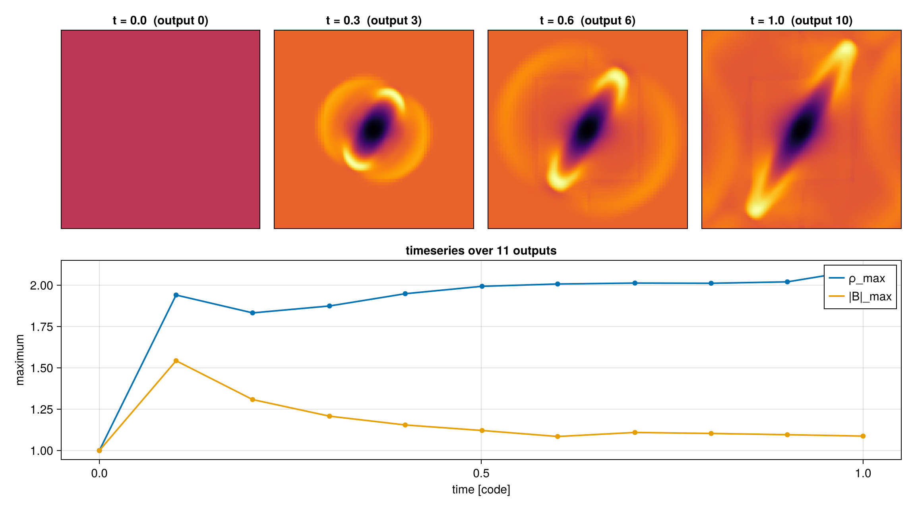
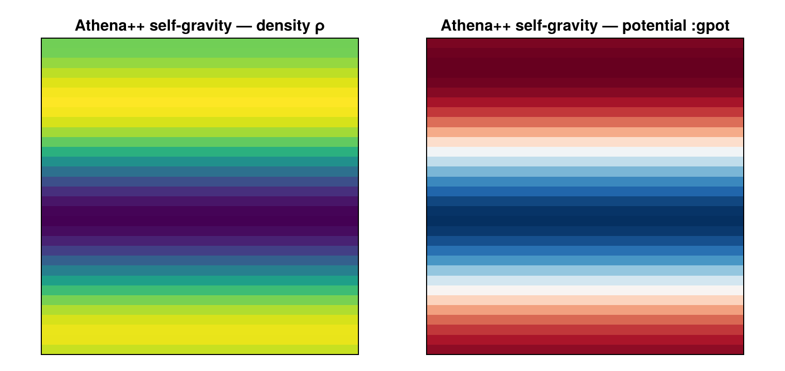
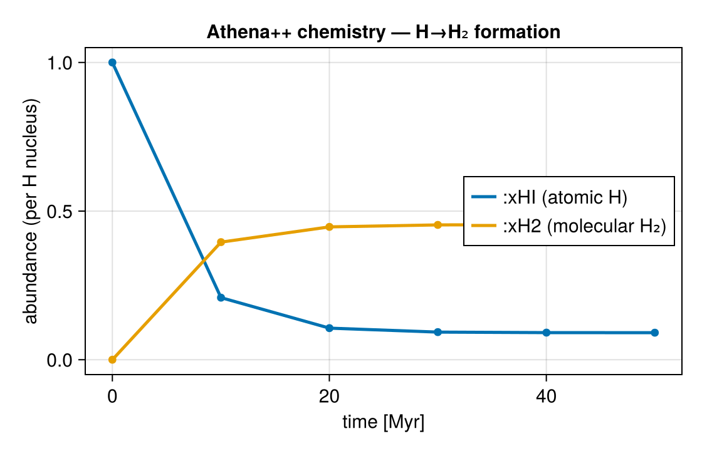
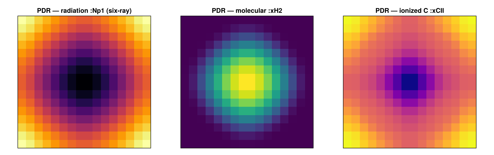

Multi-code support
All of the readers below are exercised in one executable Jupyter notebook — open / download 16_multi_OtherCodes.ipynb. It loads PLUTO / Chombo / Athena++ / FLASH / GADGET, shows MHD / gravity / chemistry / RT fields, a load-time sub-region, and a save/load round-trip — and runs end-to-end as part of Mera's test suite.
Mera began as a RAMSES tool, but its analysis layer is code-blind: every quantity (getvar), map (projection), region (subregion), filter (filterdata), profile, PDF, time-series and clump finder works on a generic uniform/AMR cell list — not on any particular file format. A reader for another simulation code therefore only has to do one thing: fill the standard Mera structs (an InfoType + a HydroDataType whose cells follow Mera's (:level, :cx, :cy, :cz, <vars…>) convention). Everything downstream then runs unchanged.
That is the whole design: a new code = "write a reader that fills the structs", not "rework Mera".
Supported codes
The normal getinfo / gethydro entry points auto-detect the code from the files in the directory (override with code=); the detected code is stored in info.simcode.
| Code | File format | Grid | Data types | Native units | Load-time window | Block I/O pruning | Reader page |
|---|---|---|---|---|---|---|---|
| RAMSES | RAMSES binary | AMR | hydro · gravity · particles · RT · clumps | physical (from info) | ✅ | — (native) | (the tutorials) |
| PLUTO | grid.out + .dbl | uniform | hydro · particles | code (dimensionless) | ✅ | n/a (one .dbl read) | PLUTO |
| PLUTO-AMR / Chombo | Chombo HDF5 | AMR | hydro | code | ✅ | ✅ (per box) | PLUTO |
| Athena++ | .athdf HDF5 | AMR | hydro · MHD | code | ✅ | ✅ (per MeshBlock) | Athena++ |
| FLASH | HDF5 PARAMESH | AMR | hydro · MHD | CGS | ✅ | ✅ (per leaf block) | FLASH |
| GADGET (+ GIZMO/AREPO/SWIFT/TNG) | HDF5 PartType* | particles | particles (gas · DM · stars · …) | code | ✅ | ✅ (per type, on read) | GADGET |
Data is loaded per type, exactly as for RAMSES: gethydro always, and getparticles where the code wrote particles (PLUTO). Only what a code actually stored is available — e.g. an Athena++/FLASH plot file is hydro + cell-centred MHD only.
Self-gravity rides along the same way: where a code writes a gravitational potential into its snapshot (Athena++ phi, FLASH gpot, Chombo gravitational-potential) the reader exposes it as a single canonical field, so getvar(gas, :gpot) — and projection, timeseries, … on it — runs identically on every code.
Chemistry & radiative transfer follow suit. A code's species abundances (Athena++ writes its chemistry networks as rH/rH2/rCO/rH+/…) are mapped to canonical fractions — :xHI, :xH2, :xCO, :xHII, … — and radiation-transport fields to canonical names too: nr_radiation energy/flux → :Erad/:Frad_*, and a six-ray chemistry run's per-frequency mean intensities (ir_avg0…7) → photon groups :Np1…:Np8 (the RAMSES-RT convention). Because these land as direct columns, getvar(gas, :xH2) or getvar(gas, :Np1), a projection of either, or a timeseries of an abundance runs the same on every code that writes them. RAMSES RT runs keep their own descriptor-based getvar species; the canonical names are the shared vocabulary.
A full PDR run (gow17 C/O chemistry + six-ray transfer) needs an implicit ODE solver — the stiff network overruns the forward-Euler solver, so the run is built against CVODE (SUNDIALS); the Radiative transfer (PDR) example below is one such run. Mera's reading of all 12 species and the 8 photon-group fields is independent of the solver.
Particles load through getparticles into a PartDataType, code-blind too: PLUTO Lagrangian particles, and the GADGET HDF5 family (GADGET/GIZMO/AREPO/SWIFT/EAGLE/TNG) with its gas/DM/star particle types — so msum, center_of_mass, getvar and projections run the same on a RAMSES halo or a GADGET galaxy. (Athena++/FLASH particle reading is not yet wired.)
Multi-output workflows are code-blind too: timeseries and getmovie/savemovie discover the output numbers in a directory per format (*.NNNNN.athdf, *_hdf5_plt_cnt_NNNN, PLUTO's dbl.out, …) and iterate them through the generic loader — so a time-series or movie reduction runs the same call on every supported code.
Worked examples: self-built runs
These three small Athena++ runs (built from source, regenerable, a few MB each) exercise the multi-code workflow end to end — multi-output time series, self-gravity, and chemistry — each loaded and analysed with the same calls used for RAMSES.
MHD blast (time series)
A 3-D MHD blast (32³ root + 2 adaptive-AMR levels, 11 HDF5 outputs). getinfo reads one snapshot:
julia> info = getinfo(5, "/data/athena_blast");
Code: Athena++
output: 5 time: 0.50111 [code units]
root grid: 32³ (level 5), MaxLevel 2 ⇒ levels 5:7, boxlen = 2.0
MeshBlocks: 148 variables: (rho, p, vx, vy, vz, bx, by, bz)
-------------------------------------------------------and timeseries reduces all 11 outputs with the same call used for RAMSES — here the peak density and field strength over time:
ts = timeseries("/data/athena_blast",
d -> (rmax = maximum(getvar(d, :rho)), bmax = maximum(getvar(d, :bmag)));
time_unit = :standard)
# output | time | rmax | bmax (ρ_max rises 1.0 → 2.1 as the blast forms;
# ───────┼──────┼───────┼───── the blast elongates along B — top row below)
Every snapshot can also be written to Mera's portable JLD2 format (savedata/loaddata) — converting any supported code into mera-files that the whole toolchain (including timeseries(…; mera_files=true)) then reads back identically.
Self-gravity
A Jeans run with self-gravity (multigrid) writes the gravitational potential, which the reader exposes as the canonical :gpot field — getvar/projection/timeseries then treat it like any other quantity:
gas = gethydro(getinfo(2, "/data/athena_selfgravity"))
projection(gas, :gpot) # the potential well tracking the density (right panel)
projection(gas, :rho) # the Jeans-mode density perturbation (left panel)
Chemistry
A run with the H₂ chemistry network writes the species abundances, mapped to canonical fractions :xHI/:xH2. A timeseries of a species is the same call as any other reduction — here the H→H₂ formation over 50 Myr:
ts = timeseries("/data/athena_chemistry",
d -> (xHI = getvar(d, :xHI)[1], xH2 = getvar(d, :xH2)[1]);
time_unit = :standard)
# output | time | xHI | xH2 (xH2 rises 0 → 0.45 as molecular hydrogen forms)
Radiative transfer (PDR)
A photo-dissociation region: gow17 (C/O) chemistry + six-ray radiative transfer (CVODE solver). The eight radiation frequency bins load as photon groups :Np1…:Np8, the species as canonical fractions — so the whole PDR stratification is just getvar/projection:
gas = gethydro(getinfo(5, "/data/athena_sixray"))
projection(gas, :Np1) # the UV radiation field, attenuated into the cloud
projection(gas, :xH2) # molecular H₂, forming in the shielded interior
projection(gas, :xCII) # ionized carbon, at the UV-exposed surface
The shared contract
Whatever the source code, a loaded object obeys the same rules — this is what makes the analysis code-blind, and what the cross-reader test (test/59_multicode_contract_tests.jl) checks:
- Cell convention. A cell at
levelwith integer indexcxsits atgetvar(:x) = cx·boxlen/2^level(likewisecy,cz); its size isboxlen/2^level. AMR readers carry a:levelcolumn; uniform readers have a single level. - Exact tiling. The leaf cells cover the box with no gaps or overlaps —
Σ getvar(:volume) = boxlen³. This is the decisive correctness check every reader is validated against on real data. - Spatial selection.
gethydro(info; xrange, yrange, zrange, center, range_unit)selects a window at load time (HDF5 AMR readers read only the intersecting blocks); the result equals a full load filtered bygetvar(:x), and the window is recorded inobj.ranges. Level/resolution is not a load argument — on a leaf-cell list a level cap would leave holes — it is chosen at analysis time (projection(…, res=)).
Reference readers
Each frontend is built to agree with the upstream tools that define its format — yt's per-code frontends and region selectors, and each code's own reader (pyPLUTO, Athena++'s athena_read.py, the FLASH user guide). The reader pages cite these as the origin the implementation is validated against; the yt sample-data collection supplies the real test snapshots.
Adding a reader
The design doc docs/dev/MULTICODE_READERS.md walks through it. In short: write getinfo_X(output, path; …) → InfoType (set simcode, levelmin/max, boxlen, unit_*, variable_list, then createconstants!/createscales!) and gethydro_X(info; xrange, …) → HydroDataType, reusing the shared _external_ranges/_external_keep helpers for load-time selection. Then add a detect_simcode branch and the getinfo/gethydro router branches, and export the two functions. Mirror the existing HDF5 readers (reader_athena.jl, reader_flash.jl) for block-structured AMR.